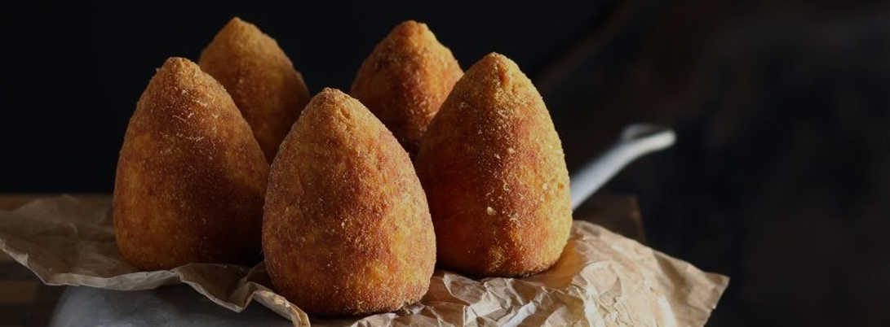
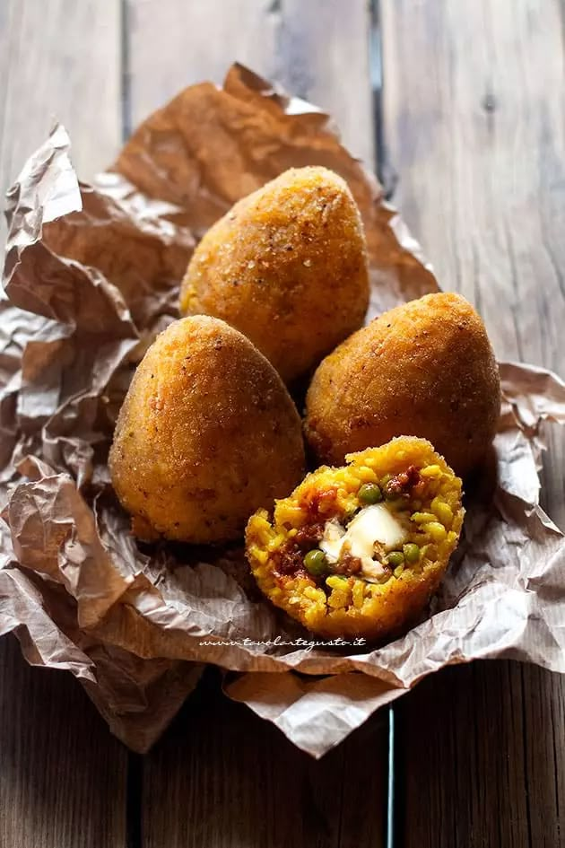
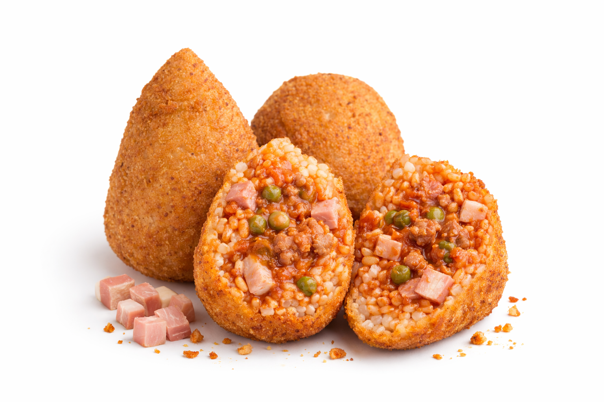

Un morso che racconta la Sicilia
Nato in sicilia secoli fa, l'arancino è il simbolo dello street food siciiliano. Da Palermo a Catania cambia forma, nome e tradizione.
SCOPRI LA STORIA

Nato in sicilia secoli fa, l'arancino è il simbolo dello street food siciiliano. Da Palermo a Catania cambia forma, nome e tradizione.
SCOPRI LA STORIA

IL SIMBOLO
L’arancino è simbolo di convivialità, tradizione e orgoglio siciliano. Un piccolo capolavoro si gusto. Scopri i consigli e gli errori da non fare...
SCOPRI DI PIÙ